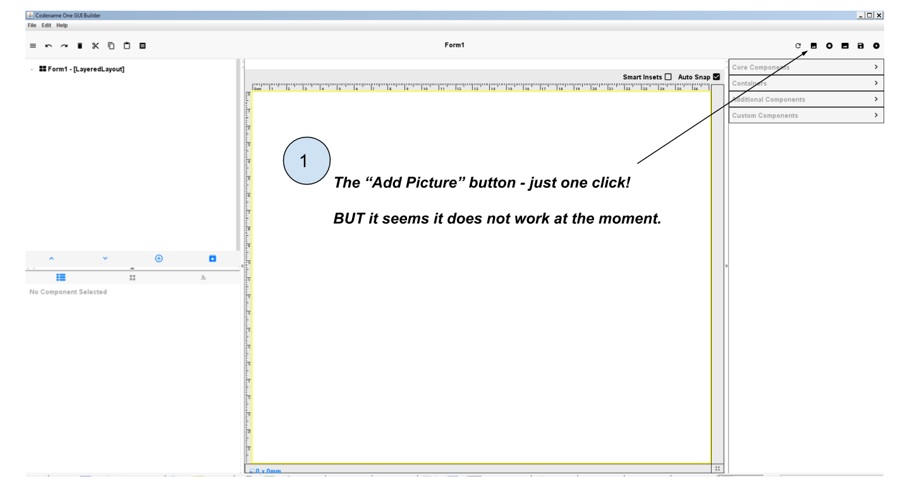
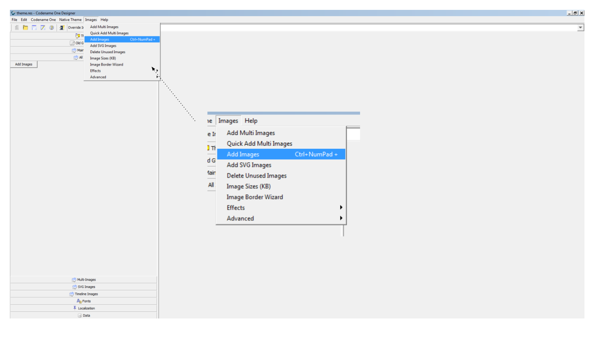
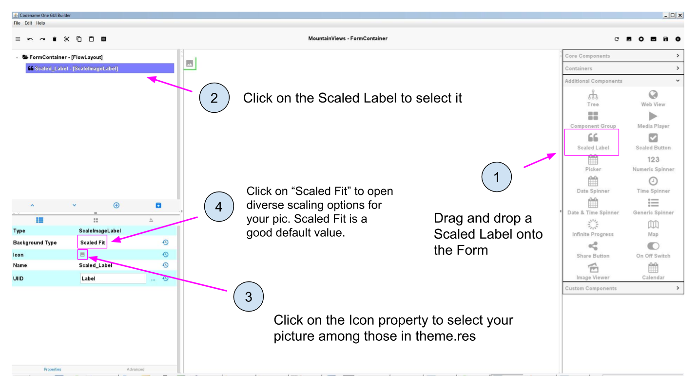
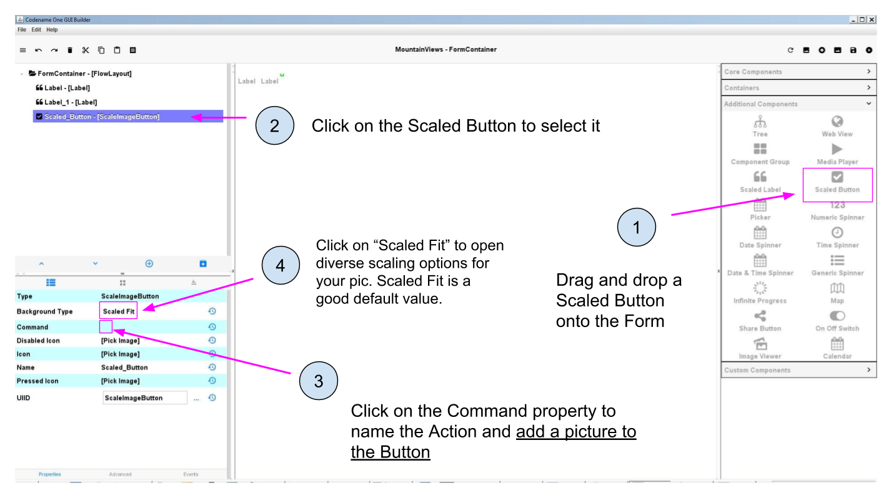
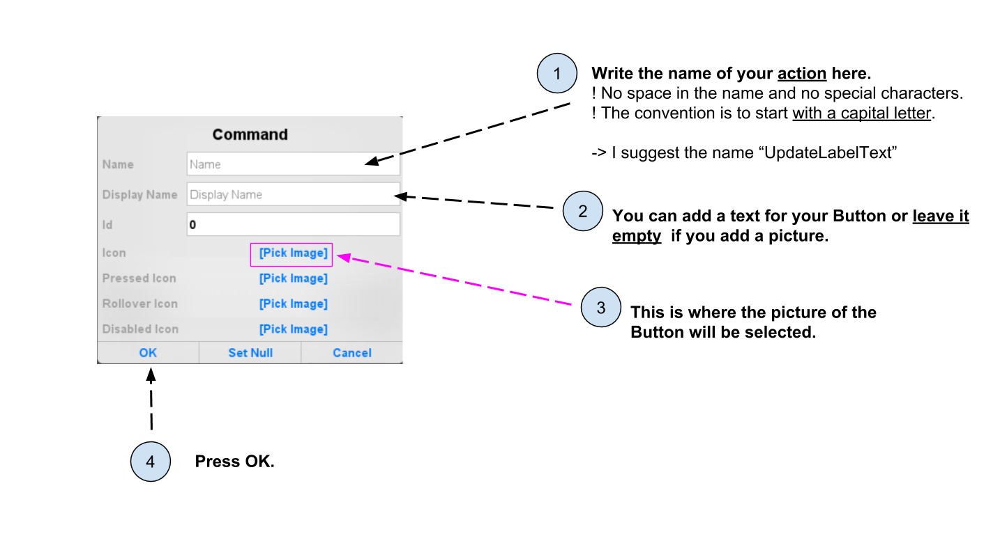

public void start() {
if (current != null) {
current.show();
return;
}
Form1 myForm1 = new Form1();
myForm1.show();
}CODAPPS
Adding Pictures to a Form
last modified: 2018-01-21
'Escape' or 'o' to see all sides, F11 for full screen, 's' for speaker notes
1. Importing a picture into the app
Before a picture can be shown on the screen of your app, you must add the picture to the files of your app.
Importing a picture in the files of the app should be done from the GUI Builder, in one click:

Figure 1. Importing from the GUI Builder - does not work at the moment
But this simple way does not work at the moment (it will probably be fixed soon).
So the alternative is to go somewhere else: in a place that used to be important to create the app, but which is now rarely used, except for cases like this.
in the files of your project in NetBeans, spot the file named "theme.res" and double click on it:

Figure 2. Clicking on the file theme.res
→ It launches a new window. Be patient, it takes a bit of time to open!
Here is how the new window should look:

Figure 3. A new window opened
There, just go in the top menu, select 'Images' and choose "Add images":

Figure 4. Selecting Add Images
Simply choose the image that you would like to insert in your app. Guidelines:
choose an image in '.jpg' or '.png' format
choose a small sized image: a file not bigger than 300kb.
Done! Save (File → Save) before you close this window, as we don’t need it anymore.
You are now ready to use this pic in your app. Let’s see how to add it onto a Form:
2. Adding a picture to a Form
A Component has been specially designed for pictures, but it is called "Scaled Label". You find it here:

Figure 5. Open the panel with Additional Components

Figure 6. Dragging a Scaled Label onto the Form and adding a Picture
You should now see your picture on the Form!
Figure 7. Open the panel with Additional Components

Figure 8. Dragging a Scaled Button onto the Form and adding a Picture to it
When clicking on "Command", a window opens:

Figure 9. Select a picture for your Button in this window
You should now see your Button on the Form: it is a picture, which triggers an action when the user touches it!
4. Setting a picture as the background of a Form
So, we have seen how to add a pic on the screen. But often we also want to set a background for the entire of the phone, like this:

Figure 10. An example of an app with a colored background
In this case, we could try to create a Scaled Label and then resize it to take the entire space of the Form, but there is a better way:
We can simply set the picture we want to the background of the Form itself. In the following, I am using a picture by user Patrick Hoesly on Flickr:

Figure 11. a green background
Just like we have seen, we need first to import this picture through the file 'theme.res' (see the top of this lesson for how to).
Then, set this picture as the "Bg Image" of the Form:

Figure 12. Setting an image as the background of the Form
To see the result, make sure to save the GUI Builder then launch the preview of the app (big green arrow  in NetBeans.).
in NetBeans.).
You should get something like:

Figure 13. Background of the app - but with the top remaining blank
This is quite good but we see that some room on the top of the app is not covered, because it is reserved space for the title of the Form.
We can remove this white space on the top by adding two lines of code to the file 'MyApplication.java'.
In the file 'MyApplication.java', spot the lines that say:
MyApplication.java
Just add two lines of code precisely like this:
MyApplication.java
public void start() {
if (current != null) {
current.show();
return;
}
Form1 myForm1 = new Form1();
myForm1.getToolbar().setUIID("Container");
myForm1.getToolbar().hideToolbar();
myForm1.show();
}Now, if you launch the preview, your background should nicely cover the entire space of your screen:

Figure 14. Background of the app - covering the entire screen
Congratulations! You learned how to place a picture onto a Form, and how to set a picture as the background of your app. It will look great! 🎉🎉🎉
This is the end of the second module. You should now be able to:
understand what a Component is.
understand what an Action is.
understand what a Form is.
create a Form using simple lines of code.
create a Form using the Graphical User Interface (GUI).
understand what are the different panels of the GUI.
trigger with a couple lines of code the opening of the Form you created with the GUI.
create a Label
create a Button and attach an action to it.
add a picture to the files of your app through theme.res
add a picture onto a Form
set a picture as the background of a Form.
You are now well equipped to work with the building blocks of the user interface (UI) of your app.
In the next module, we are going to learn how to style and place all these different Components exactly where you want them to be on screen, to achieve the design you have in mind.
The end
Questions? Want to open a discussion on this lesson? Visit the forum here (need a free Github account).
Find references for this lesson, and other lessons, here.
Licence: Creative Commons, Attribution 4.0 International (CC BY 4.0). You are free to:
copy and redistribute the material in any medium or format
Adapt — remix, transform, and build upon the material
⇒ for any purpose, even commercially.
 This course is designed by Clement Levallois.
This course is designed by Clement Levallois.
Discover my other courses in data / tech for business: http://www.clementlevallois.net
Or get in touch via Twitter: @seinecle